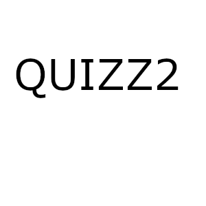
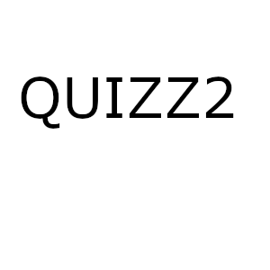
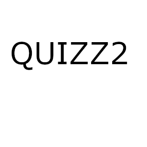

***** QUIZZ ASTRO *****
***** QUIZZ ASTRO *****
***** QUIZZ ASTRO *****
| question 1 | a=2 | b=1 | c=3 | d=4 |
| question 2 | a=2 | b=3 | c=1 | d=4 |
| question 3 | a=4 | b=3 | c=1 | d=2 |
| question 4 | a=4 | b=1 | c=2 | d=3 |
| question 5 |
a=1
|
b=4
|
c=2
|
d=3
| |
| question 6 | a=1 | b=3 | c=4 | d=2 |
| question 7 | a=4 | b=1 | c=3 | d=2 |
| question 8 | a=2 | b=1 | c=3 | d=4 |
| question 9 | a=4 | b=2 | c=3 | d=1 |
De 16 à 22 points SIGNES DE TERRE Tu as besoin de quelqu'un de sérieux ? Un amour aux épaules solides, aux pieds bien ancrés sur le sol ? Alors mets-toi en chasse d'un Taureau. Mais si son immobilisme te déplaît, tourne-toi plutôt vers le signe de la Vierge qui, malgré ses petites manies et sa critique facile, saura t'apporter plus de douceur et de fantaisies que les bêtes à cornes. Non pas que le Capricorne soit dépourvu de tendresse, quoique sa plus grande qualité soit le bon sens dont il bénéficie. C'est lui qu'il faut choisir si tu tiens à vivre avec une personne pour qui la réussite sociale et professionnelle compte beaucoup. Quel que soit ton choix, c'est dans un signe de terre que ton amour prend racine !
De 23 à 29 points SIGNES D'AIR C'est un plaisir d'être amoureuse d'un Gémeaux ! Ils n'ont pas peur d'exprimer leurs sentiments et, d'ailleurs, ont beaucoup de mal à dissimuler ce qu'ils ressentent. C'est le signe qui vous convient, si vous souhaitez lire dans l'esprit de votre compagnon comme dans un livre. La Balance est plus équilibrée, un peu plus réservée et plus rassurante. Si les Gémeaux vous agacent, c'est elle qui vous apportera la sérénité amoureuse que vous cherchez. Le Verseau est également un choix qui peut vous convenir, si vous avez la tolérance suffisante pour accepter son insoumission et son besoin d'indépendance. C'est l'un des trois signes d'air qui vous fera planer sur les ailes de l'amour.
De 30 à 36 points SIGNES D'EAU Pour vivre une grande passion total où l'on s'abandonne corps et âme, c'est au Scorpion qu'il faut donner son coeur. Mais attention, les passions du Scorpion peut se révéler venimeuses et destructrices ! Pour plus de légèreté, au pris d'un peu moins de fougue, vous choisirez le Cancer. Son attachement est sans égal, son romantisme en fait parfois un grand poète. Le revers de la médaille, ce sont ses petits caprices ! Caprices que le Poissons ignore, car il s'adapte à la personne qu'il aime avec beaucoup de patience et de compassion. C'est lui qu'il faut choisir si vous avez un caractère difficile qui demande quelques efforts à la personne qui vous aime. C'est l'un des trois signes d'Eau qui vous baignera dans un océan d'amour !